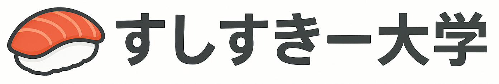

トップ
学校紹介
学科紹介
スクールライフ
教職員紹介
受験生の方へ
教職員・在校生の方へ
2024年度一般試験過去問
制作者:塩ポテト君
Q1. 以下の菓子の名称を答えよ（配点: 100点）
A. 今川焼き
B. 回転焼き
C. アンコリーノ
D. おやき
Q2. モデレータでない人物を選べ（配点: 2点）
A. DELTA
B. くちばし
C. 兎亜
D. シマエナガ
Q3. くちばしの髪留めとして正しいものを選べ（配点: 1点）
A. 寿司の模型
B. 「す」の文字
C. アンコリーノ違反者の生首
D. 赤いリボン
Q4. AIポテト君が発言していないものを選べ（配点: 2点）
A. あっ調理される
B. ぼくだよ殺すぞ
C. おちんちんちわ～
D. アイス許可する
Q5. ボールプニの意味を答えよ（配点: 1点）
A. ぷにぷにしたボール
B. ボールをぷにぷにする
C. ボール型のプニ
D. ボールペン
Q6. レジスタンスとは何か（配点: 2点）
A. アンコリーノ対抗勢力
B. スパム集団
C. ベジマイトを拒否する人
D. レジ打ちする人
Q7. すしすきーが開設されたのはいつか（配点: 2点）
A. 2023年
B. 2021年
C. 2018年
D. 2020年
Q8. 初心者マークのロールが付くのは登録から何日目までか（配点: 1点）
A. 1日目
B. 3日目
C. 5日目
D. 7日目
Q9. ロールを取得時期順に並べたものはどれか（配点: 1点）
A. 豆腐,初心者,ヨッシー,キリン,メンダコ,赤皿,緑皿
B. 初心者,豆腐,メンダコ,キリン,ヨッシー,赤皿,緑皿
C. 豆腐,初心者,キリン,ヨッシー,メンダコ,緑皿,赤皿
D. 豆腐,初心者,キリン,ヨッシー,メンダコ,赤皿,緑皿
Q10. しばいてくれるのは誰か（配点: 2点）
A. シバキング
B. 御前田 芝区
C. 御前尾 芝区
D. DELTA
Q11. AIポテト君の機能として存在しないものを選べ（配点: 2点）
A. リバーシ機能
B. クリップ機能
C. リアクション機能
D. ダジャレ機能
Q12. くちばしが作って投稿したことがあるものを答えよ（配点: 1点）
A. 青い焼き肉
B. 青い親子丼
C. 虹色のカレー
D. 金色のフリスビー丼
Q13. ハンバーグもぐもぐザウルスの名言はどれか（配点: 1点）
A. うんちの値、うん値
B. おちんちんちわ～
C. チンチンのポエム チンポエム
D. ワニクリック詐欺
Q14. にゃんぷっぷー無料回収サービスの目的はどれか（配点: 1点）
A. 保護
B. 虐待
C. 転売
D. 根絶
Q15. 存在しない絵文字はどれか（配点: 2点）
A. ペンギンスチーマー
B. ださい...
C. ばばばばばえおうぃおい〜べべべべべべべべべえべえええべ
D. ケキキチーン
Q16. 空欄に当てはまる言葉はどれか（配点: 2点）
[ ]一つだけの写真を見て一つだけで写真撮られるなんて高級な[ ]なんだな…とか思ってたらカヌレっていう食い物だったらしい
A. ちくわ
B. バウムクーヘン
C. ちくわぶ
D. カブトムシのゼリー
Q17. ギャンカスではないのは誰か（配点: 1点）
A. タマナシ
B. DETLA
C. チンパン・クラップ
D. ペラップ
Q18. 表示が自動で閉じられないように大きく表示したいときのMFM表現はどれか（配点: 1点）
A. x2
B. scale.x=2,y=2
C. tada.speed=0s
Q19. レジスタンスの首謀者は誰か（配点: 4点）
A. くちばし
B. 渡鴉
C. 塩ポテト君
D. ナス
Q20. ポテト君は（配点: 1点）
A. かわいい
採点
採点結果
結果をSNSでシェアする